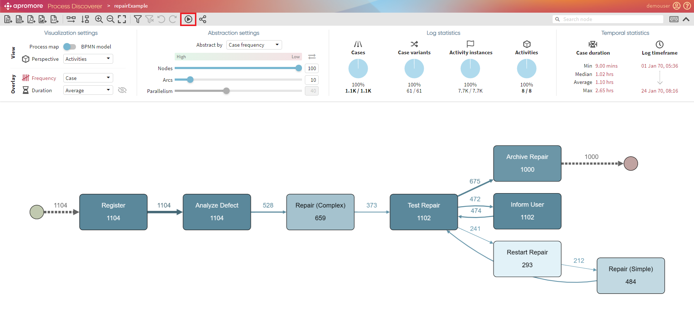
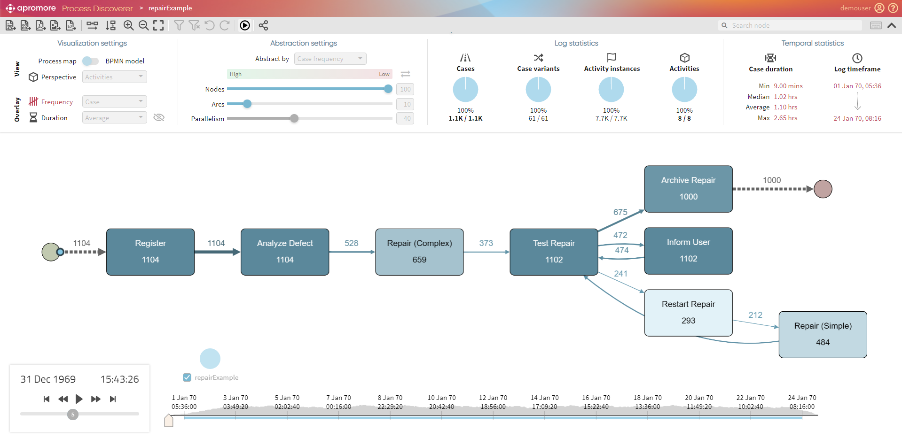
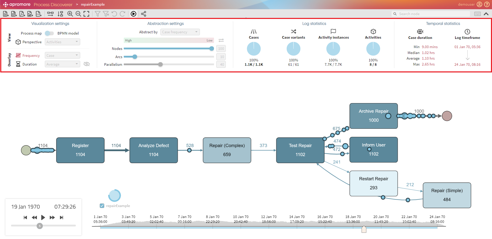
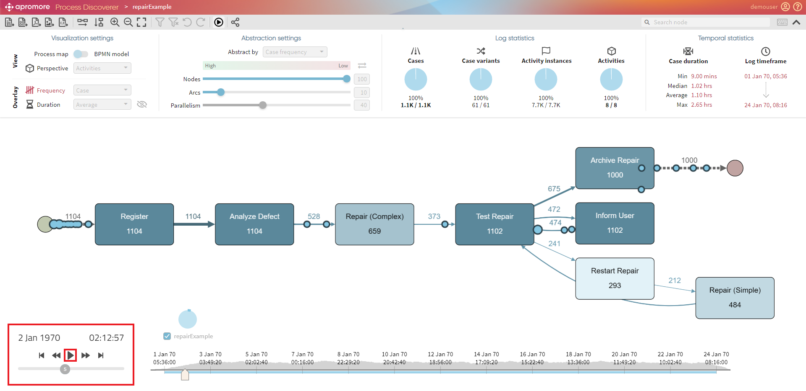
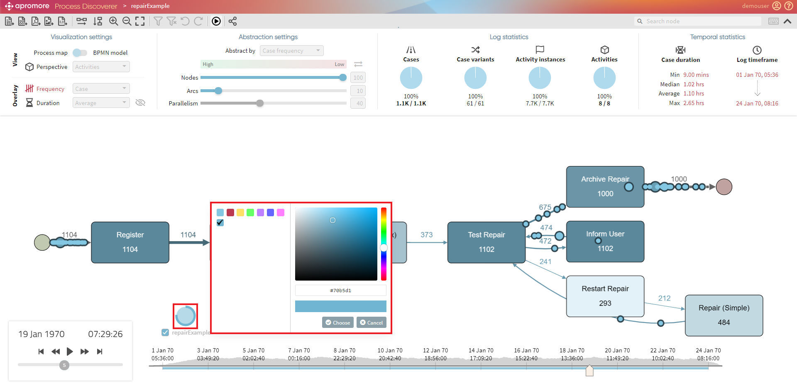
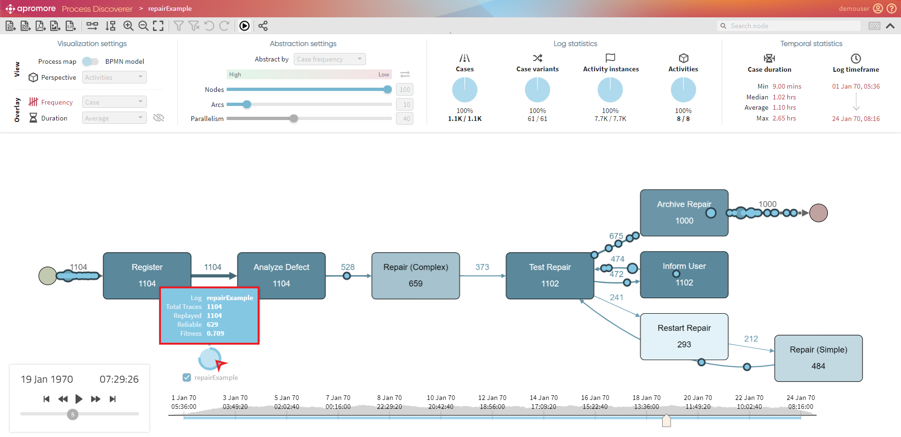
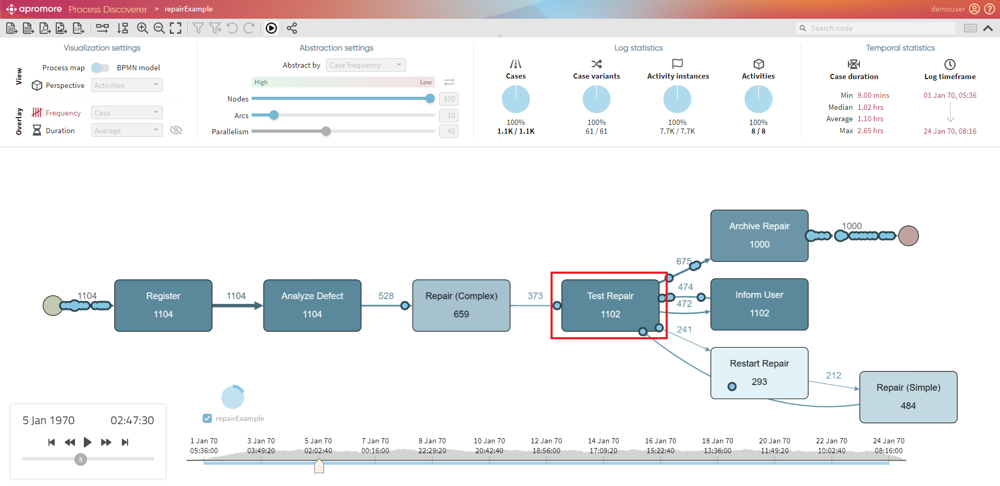

Animate logs (Process map)¶
Apromore allows us to replay an event log on top of its process map. To use this plugin, select an event log from the repository and click the Animate button in the process discoverer.

The process map within Editor along with the timeline is displayed.

Note
Once the animation button is clicked, other functionalities like abstraction and visualization settings are disabled.

Standard Controls¶
The animation will start by hitting the Play button. Each token represents the progress of a particular process instance, i.e., a case.

Standard controls are available to play, pause, fast or slow forward/rewind the animation and to skip through the end/beginning. The replay speed can be changed with the vertical bar. These actions are also available during the animation. If the view on the process map is zoomed in/out, or the process map layout is changed, the tool will try to adapt the animation to the new position of the elements on the canvas.
Tip
To zoom-in/zoom-out, press Ctrl and use the mouse scroll wheel
We can change the color of tokens by clicking on the pie chart.

Note
We can either choose from the default colors or add the customized ones. To add a customized color - enter a color code or drag the mouse over the palette.
To check log-related statistics, hover over the pie chart.

Token Traversal¶
A token traversing an activity indicates that the case captured by that token is performing that activity. However, if the token goes around an activity’s border, this indicates that the particular activity is skipped in that process case.

A token of a larger size or a large number of tokens slowly traversing a given path may indicate a performance bottleneck, e.g. cases pile up in a particular point of the process due to resources unavailability.